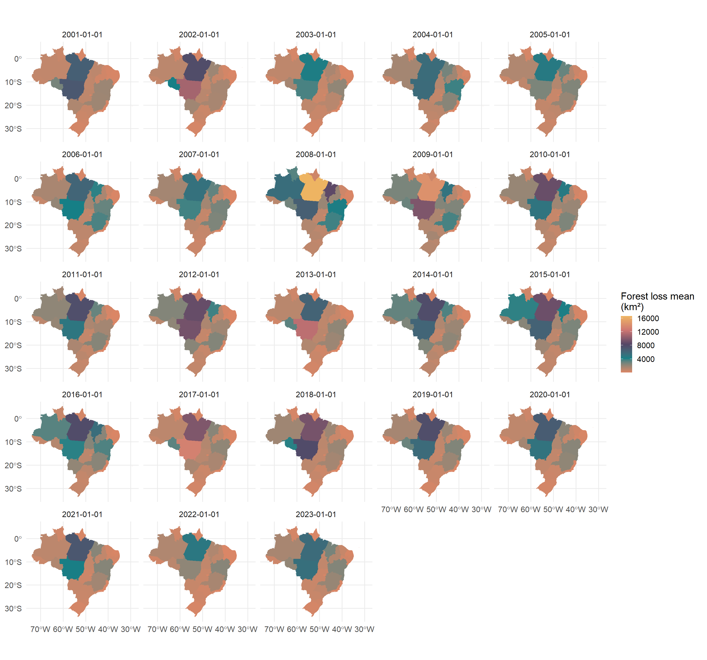
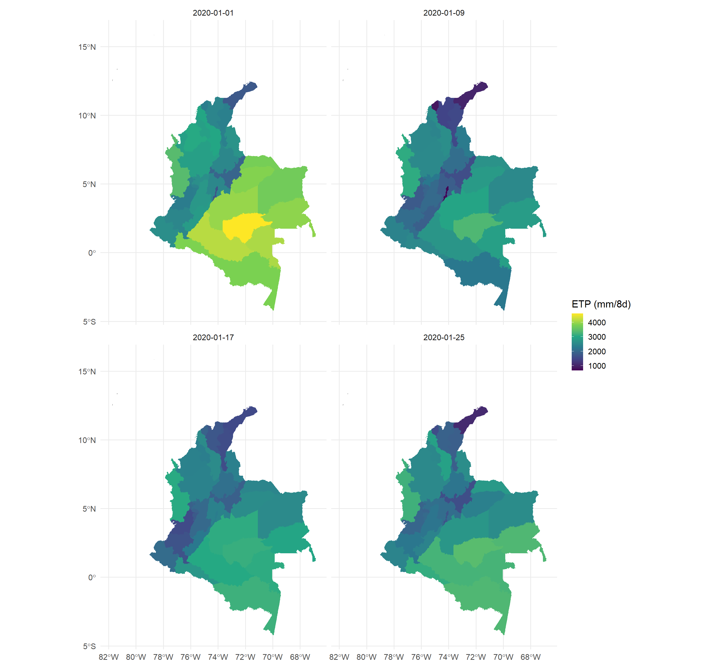

land4health: Remote Sensing Metrics for Spatial Health Analysis
Calculate and extract remote sensing metrics for spatial health analysis 🛰️. This package offers R users a quick and easy way to obtain areal or zonal statistics of key indicators and covariates, ideal for modeling infectious diseases 🦠 within the framework of spatial epidemiology 🏥.
Team
The development team from Harmonize Perú is composed of:

Antony Barja

Yomali Ferreyra

Diego Villa
Backend - Main Dependencies
The land4health package relies on eight core backend packages. Among them, three stand out:

In this first version, rgee was chosen as the primary package for connecting to Google Earth Engine, complemented by sf and progress for efficient spatial data handling and a smoother user interaction.
Road of deveploment

What You Can Do with the land4health Package ?
When launching land4health for the first time, a welcome message appears introducing the purpose of the package, the available indicators, and how to learn more.
It also includes a brief overview of the Harmonize project and provides a link to the official website, encouraging users to further explore the initiative and its applications in environmental and spatial health.
library(land4health)── Welcome to land4health ────────────────────────────────────────────────────────────────
A tool of Harmonize Project to calculate and extract Remote Sensing Metrics for Spatial
Health Analysis. Currently,`land4health` supports metrics in the following categories:
• Accesibility
• Climate
• Enviroment
• and more!
For a complete list of available metrics, use the `l4h_list_metrics()` function.
──────────────────────────────────────────────────────────────────────────────────────────
Attaching core land4health packages:
→ rgee v1.1.7
→ sf v1.0.21All functions in the package follow a consistent naming convention, starting with the prefix l4h_*, making them easy to identify and use.
For instance, the function l4h_list_metrics() allows users to retrieve the full list of available metrics.
All examples keep open_in_browser = FALSE to avoid side effects. However, setting open_in_browser = TRUE will automatically open a new tab in your default web browser and redirect you to the official source page of the selected indicator, allowing you to explore more information about it.
## 1 Show the full inventory (truncated to 10 rows).
l4h_list_metrics()# A tibble: 10 × 11
category metric pixel_resolution_met…¹ dataset start_year end_year
<chr> <chr> <chr> <chr> <int> <int>
1 Human intervention Defore… 30 Hansen… 2000 2023
2 Human intervention Human … 300 Global… 1990 2017
3 Human intervention Popula… 100 WorldP… 2000 2021
4 Human intervention Urban … 500 MODIS … 2001 2022
5 Human intervention Night … 500 VIIRS … 1992 2023
6 Human intervention Human … 30 Global… 1975 2030
7 Enviroment Water … 30 MapBio… 1985 2022
8 Enviroment Urban … 1000 Urban … 2003 2020
9 Accesibility Travel… 927.67 Malari… 2019 2020
10 Accesibility Rural … 100 Rural … 2024 2024
# ℹ abbreviated name: ¹pixel_resolution_meters
# ℹ 5 more variables: resolution_temporal <chr>, layer_can_be_actived <lgl>,
# tags <chr>, lifecycle <chr>, url <chr>
... (1 more)## 2 Filter by category (“Human intervention”).
l4h_list_metrics(category = "Human intervention")# A tibble: 6 × 11
category metric pixel_resolution_met…¹ dataset start_year end_year
<chr> <chr> <chr> <chr> <int> <int>
1 Human intervention Defores… 30 Hansen… 2000 2023
2 Human intervention Human M… 300 Global… 1990 2017
3 Human intervention Populat… 100 WorldP… 2000 2021
4 Human intervention Urban a… 500 MODIS … 2001 2022
5 Human intervention Night t… 500 VIIRS … 1992 2023
6 Human intervention Human S… 30 Global… 1975 2030
# ℹ abbreviated name: ¹pixel_resolution_meters
# ℹ 5 more variables: resolution_temporal <chr>, layer_can_be_actived <lgl>,
# tags <chr>, lifecycle <chr>, url <chr>## 3 Filter by provider (“WorldPop”) and store the result.
worldpop_tbl <- l4h_list_metrics(provider = "WorldPop")# A tibble: 1 × 11
category metric pixel_resolution_met…¹ dataset start_year end_year
<chr> <chr> <chr> <chr> <int> <int>
1 Human intervention Populat… 100 WorldP… 2000 2021
# ℹ abbreviated name: ¹pixel_resolution_meters
# ℹ 5 more variables: resolution_temporal <chr>, layer_can_be_actived <lgl>,
# tags <chr>, lifecycle <chr>, url <chr>head(worldpop_tbl)# A tibble: 1 × 11
category metric pixel_resolution_met…¹ dataset start_year end_year
<chr> <chr> <chr> <chr> <int> <int>
1 Human intervention Populat… 100 WorldP… 2000 2021
# ℹ abbreviated name: ¹pixel_resolution_meters
# ℹ 5 more variables: resolution_temporal <chr>, layer_can_be_actived <lgl>,
# tags <chr>, lifecycle <chr>, url <chr>With land4health, you can calculate the vegetation cover loss in square kilometers for any polygon of interest using the l4h_forest_loss() function.
library(land4health)
library(geodata)
library(ggplot2)
library(dplyr)
ee_Initialize()── rgee 1.1.7 ─────────────────────────────────────── earthengine-api 0.1.370 ──
✔ user: not_defined
✔ Initializing Google Earth Engine:
✔ Initializing Google Earth Engine: DONE!
✔ Earth Engine account: users/geografo2023
✔ Python Path: C:/Users/USER/Documents/.virtualenvs/rgee/Scripts/python.exe
──────────────────────────────────────────────────────────────────────────────── # Download Brazil's boundaries as an object sf
brasil_sf <- geodata::gadm(country = "BRA", level = 1, path = tempdir()) |>
st_as_sf()# Loss of vegetation cover (2001-2023)
forest_loss <- l4h_forest_loss(
from = 2001,
to = 2023,
region = brasil_sf,
sf = TRUE)Extracting data [>--------] 15% | 4/27 | ETA: 25mggplot(data = forest_loss) +
geom_sf(aes(fill = value), color = NA) +
scale_fill_gradientn(name = "Forest loss mean \n(km²)",colours = c("#DC8665","#138086","#534666","#CD7672","#eeb462")) +
theme_minimal(base_size = 15) +
facet_wrap(date ~ .)
# Download Colombia's boundaries as an object sf
colombia_sf <- geodata::gadm(country = "COL", level = 1, path = tempdir()) |>
st_as_sf()# Evapotranspiration
sebal_8d <- l4h_sebal_modis(
from = "2020-01-01",
to = "2020-12-31",
region = colombia_sf
)sebal_jan <- sebal_8d %>%
filter(date >= as.Date("2020-01-01") & date <= as.Date("2020-01-31"))
ggplot(sebal_jan) +
geom_sf(aes(fill = value), color = NA) +
scale_fill_viridis_c(name = "ETP (mm/8d)") +
theme_minimal(base_size = 15) +
facet_wrap(date ~ .)